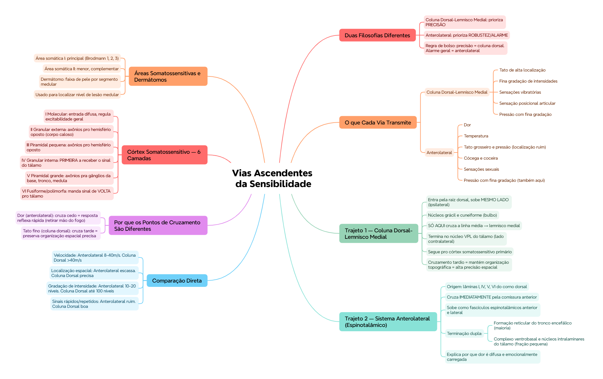

🎯 O que você vai conseguir fazer depois desse capítulo
Diferenciar o sistema coluna dorsal-lemnisco medial do sistema anterolateral pela função, não só pelo nome
Traçar o trajeto completo de cada via, da periferia até o córtex
Comparar as duas vias em velocidade, precisão espacial e tipo de sensação transmitida
Reconhecer as 6 camadas do córtex somatossensitivo e a função de cada uma
Aplicar o conceito de dermátomo na localização de lesões medulares
🧭 Duas vias, duas filosofias diferentes de transmitir sensação
A medula espinal carrega a informação sensitiva ao encéfalo por dois sistemas separados, que não são só "caminhos diferentes" — são filosofias diferentes de processar informação: um prioriza precisão, o outro prioriza robustez.
Sistema Coluna Dorsal-Lemnisco Medial
Sistema Anterolateral
Tato que exige alta localização do estímulo
Dor
Fina gradação de intensidades
Temperatura (calor e frio)
Sensações fásicas (vibratórias)
Tato grosseiro e pressão (localização ruim)
Movimento contra a pele
Cócega e coceira
Sensação posicional articular
Sensações sexuais
Pressão com fina gradação de intensidade
Pressão com fina gradação de intensidade
💭 Repare no último item da tabela: "pressão com fina gradação" aparece nos DOIS sistemas — não é erro de digitação, é o material de referência mesmo. Sensações de pressão fina podem transitar por ambas as vias, dependendo do contexto.
🛤️ Trajeto 1 — Sistema Coluna Dorsal-Lemnisco Medial
Esse é o sistema da precisão. Sobe pelo mesmo lado da medula (ipsilateral) até bem perto do encéfalo — só ali ele cruza.
Fibras sensitivas entram pela raiz dorsal e sobem do mesmo lado, pelas colunas dorsais da medula
Chegam aos núcleos grácil e cuneiforme, no bulbo (parte baixa do tronco encefálico)
Só aqui as fibras cruzam a linha média e sobem como lemnisco medial
Terminam no núcleo ventral posterolateral (VPL) do tálamo, do lado contralateral
Do tálamo, seguem pra córtex somatossensitiva primária
🟢 Por que isso importa fisiologicamente: como o cruzamento acontece só no bulbo (bem perto do encéfalo), esse sistema mantém as fibras organizadas topograficamente por quase todo o trajeto medular — isso é o que permite a precisão espacial altíssima desse sistema.
🛤️ Trajeto 2 — Sistema Anterolateral (Via Espinotalâmica)
Esse é o sistema da robustez. Cruza quase imediatamente, logo na entrada da medula.
Fibras se originam principalmente nas lâminas I, IV, V e VI do corno dorsal da medula
Cruzam de imediato pela comissura anterior da medula, para o lado oposto
Sobem pelas colunas branca anterior e lateral como fascículos espinotalâmicos anterior e lateral
Terminação dupla: parte vai pros núcleos da formação reticular do tronco encefálico; parte vai direto pro complexo ventrobasal e núcleos intralaminares do tálamo
🏥 Detalhe clinicamente relevante: só uma FRAÇÃO PEQUENA das fibras de dor projeta direto pro complexo ventrobasal do tálamo. A maioria passa antes pela formação reticular do tronco encefálico, e só depois segue pros núcleos intralaminares — onde a informação de dor é reprocessada. Isso ajuda a explicar por que a dor é uma experiência difusa e emocionalmente carregada, diferente da precisão do tato fino.
⚖️ Comparação direta entre as duas vias
Aspecto
Anterolateral
Coluna Dorsal-Lemnisco Medial
Velocidade
8–40 m/s
Geralmente >40 m/s
Localização espacial
Escassa
Precisa
Gradação de intensidade
10–20 níveis
Até 100 níveis
Transmitir sinais rápidos/repetidos
Ruim
Boa
O que transmite
Dor, temperatura, cócega, coceira, sexual, tato grosseiro
Tato fino, vibração, propriocepção
📌 O que o professor cobra nesta seção: essa tabela de comparação inteira — é o tipo de conteúdo que vira questão de "associe a característica à via correta" quase sempre.
💡 Regra de bolso: se a sensação exige PRECISÃO (onde exatamente, quanto exatamente), é coluna dorsal. Se é mais sobre ALARME/ESTADO GERAL (tem alguma coisa errada aqui, está quente, está doendo), é anterolateral.
🧠 Córtex somatossensitivo — as 6 camadas
O córtex cerebral tem 6 camadas de neurônios, da mais superficial (I) até a mais profunda (VI). No córtex somatossensitivo, cada camada tem um papel específico no processamento do sinal que acabou de chegar do tálamo:
Camada
Nome
Função principal
I
Molecular
Recebe entrada difusa de centros inferiores; regula excitabilidade geral
II
Granular externa
Envia axônios pro hemisfério oposto via corpo caloso; entrada difusa
III
Piramidal pequena
Envia axônios pro hemisfério oposto via corpo caloso
IV
Granular interna
Primeira a receber e processar o sinal sensitivo que chega
V
Piramidal grande
Envia axônios pra regiões profundas — gânglios da base, tronco, medula
VI
Fusiforme/polimorfa
Envia axônios de volta pro tálamo, regulando sua excitabilidade
💡 Pra fixar a lógica: a camada IV é a "porta de entrada" (recebe o sinal do tálamo primeiro), e a camada VI é a "porta de saída de volta" (manda sinal de volta pro tálamo) — as duas conectam diretamente com o tálamo, mas em direções opostas.
🗺️ Áreas somatossensitivas e dermátomos
O córtex somatossensitivo se divide em área somática I (a principal, correspondendo às áreas de Brodmann 1, 2 e 3) e área somática II (menor, complementar). Cada segmento da medula espinal recebe sensibilidade de uma faixa específica da pele — esse mapa é o dermátomo, e é uma das ferramentas mais usadas na prática pra localizar o nível de uma lesão medular.
✅ O que você deve lembrar
Área somática I = Brodmann 1, 2 e 3. Dermátomo = faixa de pele correspondente a um segmento medular específico — usado pra localizar lesões.
⚠️ Erro comum
Achar que as duas vias cruzam no mesmo lugar — a coluna dorsal cruza tarde (no bulbo), a anterolateral cruza cedo (na própria medula, na entrada).
⚡ Questão rápida
Um paciente perde a sensibilidade dolorosa de um lado do corpo, mas mantém a propriocepção normal do mesmo lado. Qual via está mais provavelmente comprometida?
A via anterolateral (espinotalâmica) do lado correspondente — ela carrega dor e temperatura. A coluna dorsal (propriocepção) está preservada, o que sugere uma lesão relativamente seletiva de uma das duas vias.
🧠 Autoexplicação
Por que faz sentido, do ponto de vista da sobrevivência, que a via de dor (anterolateral) cruze quase imediatamente na medula, enquanto a via de tato fino (coluna dorsal) só cruza perto do encéfalo?
A dor é um sinal de alarme que precisa gerar resposta motora reflexa rápida (retirar a mão do fogo, por exemplo) — cruzar cedo na medula permite que a informação já chegue rapidamente pro lado certo do sistema nervoso, otimizando reflexos de proteção. Já a informação de tato fino/propriocepção não exige essa urgência reflexa imediata; o que ela exige é MANTER a organização espacial precisa do sinal pelo maior trecho possível do trajeto, para que o córtex consiga reconstruir com exatidão onde e como o estímulo aconteceu — por isso o cruzamento é adiado até o ponto mais próximo do destino final (o encéfalo), minimizando a chance de "borrar" a informação espacial ao longo do caminho.
⚠️ Onde todo mundo escorrega
Trocar o ponto de cruzamento das duas vias — anterolateral cruza CEDO (na medula), coluna dorsal cruza TARDE (no bulbo)
Achar que "anterolateral" é sinônimo só de dor — na verdade também carrega temperatura, cócega, coceira, sensações sexuais e tato grosseiro
Confundir núcleo grácil/cuneiforme (bulbo, coluna dorsal) com complexo ventrobasal (tálamo, destino final de ambas as vias)
Esquecer que a camada IV do córtex é a que recebe o sinal primeiro — não a camada I, que é a mais superficial
Ambas terminam no tálamo e seguem pro córtex somatossensitivo — mas por rotas diferentes
Camada IV do córtex recebe o sinal primeiro; camada VI manda resposta de volta pro tálamo
Dermátomo = mapa de pele por segmento medular, usado pra localizar lesões
🩺 Caso Clínico Progressivo — Síndrome Medular
Vamos acompanhar a Dona Elza, 71 anos, que chega com um quadro sensitivo que só faz sentido quando você aplica o conhecimento das duas vias ascendentes. O caso evolui em 3 níveis — clica em cada um pra ver como as coisas vão se desenrolando.
🧠 Mapa Mental — Vias Ascendentes da Sensibilidade Somática
Visão geral do capítulo em formato visual — ideal pra revisão rápida antes da prova. O conteúdo completo, com explicações e exemplos, está no Guia de Estudo.

🃏 Flashcards — SM-2 real + interface Anki
O sistema guarda, no seu navegador, quais cards você já sabe bem e quais precisam voltar mais cedo — cada vez que você avalia um card, ele recalcula quando ele deve voltar.
Cartão 1 / 0Dominados: 0
PERGUNTA
RESPOSTA
✅ Banco de Questões Comentadas
10 questões, do mais básico ao mais puxado. Escolhe uma alternativa, depois clica em "Ver comentário completo" — vale a pena ler até quando você acerta, porque o comentário explica cada alternativa, não só a certa.